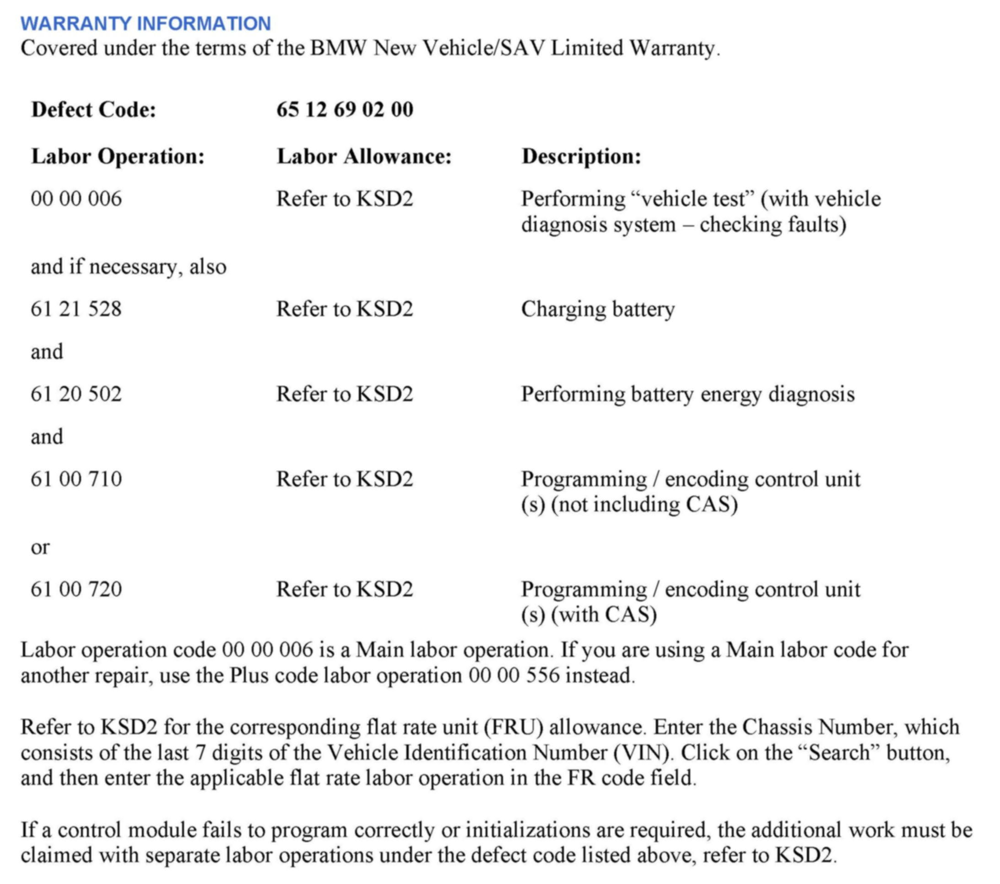
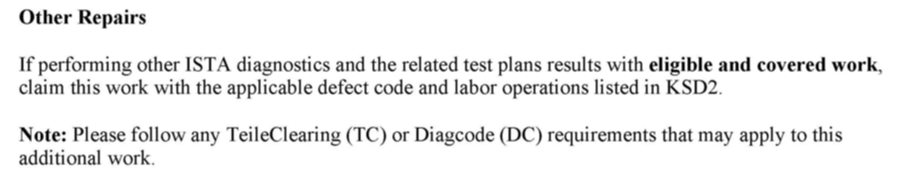
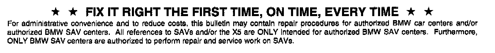

Audio System - RAD2plus(R) Radio Causes Battery Drain
SI B65 20 12Audio, Navigation, Monitors, Alarms, SRS
January 2013
Technical Service
SUBJECT
RAD2plus: Radio Causes Battery Drain
MODEL
E82
E88
E89
E90
E91
E92
E93
Produced from September 2010 to March 2012 with option 663 (Radio BMW Professional, RAD2+)
SITUATION
The vehicles battery state of charge is very low after the vehicle was parked for a longer period of time (e.g., overnight).
CAUSE
The RAD2+ radio doesn't allow the vehicle to enter full sleep mode, and causes a current draw from the battery with ignition off.
CORRECTION
Do not replace parts for this issue.
Step 1:
1. Perform a vehicle test using the latest ISTA diagnostic software.
Note:
When the ISTA system message displays: "Battery voltage only "XX.XX" V. Please connect charger." Please note the displayed battery voltage reading in the repair order comments section. This documentation is not necessary when part of an approved Technical Service repair procedure; the battery charger is required to be attached before performing the Vehicle Test.
2. When the diagnosis result shows that the battery state of charge is low, follow and complete the test plan for Energy Diagnosis. A DIAGCODE will be given at the end of the test plan.
a. When the test plan result shows that the RAD2+ radio is the root cause (permanently waking up the vehicle), perform step 2.
b. If the test plan result doesn't show the RAD2+ radio as the root cause, follow relevant test plans and perform more diagnosis.
Step 2:
1. Program the vehicle using ISTA/P 2.48.1 or later.
Note that ISTA/P will automatically reprogram and code all programmable control modules that do not have the latest software.
2. Complete all of the post-programming work as indicated in the ISTA/P Final Report. This includes performing diagnosis and clearing faults with ISTA, if necessary.
For information on programming and coding with ISTA/P, refer to CenterNet / Aftersales Portal / Service / Workshop Technology / Vehicle Programming.


WARRANTY INFORMATION

Disclaimer